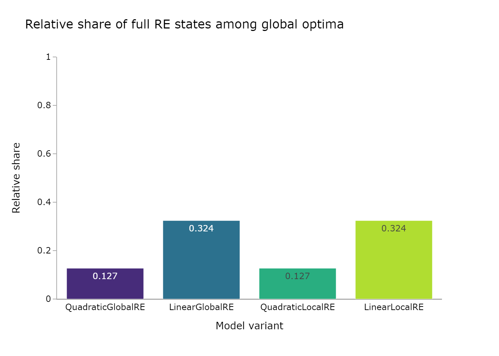
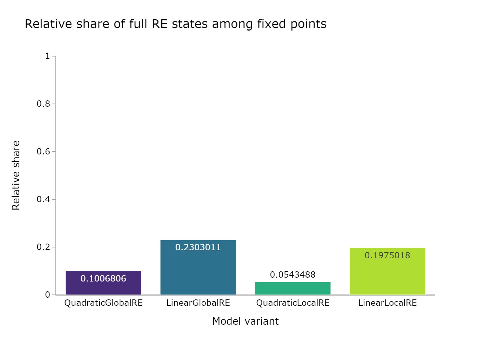
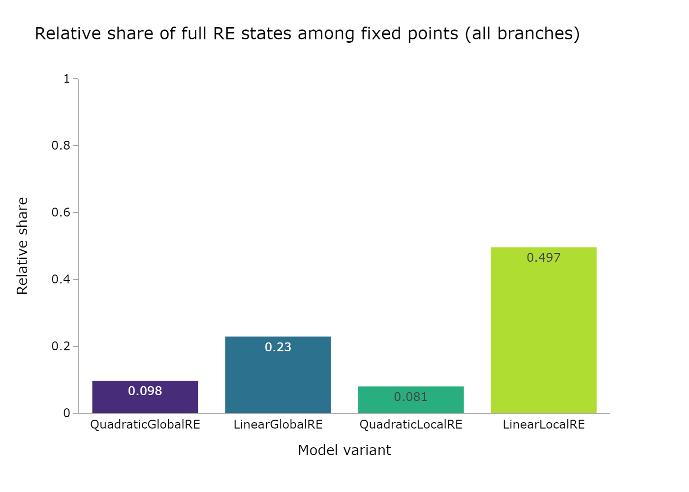
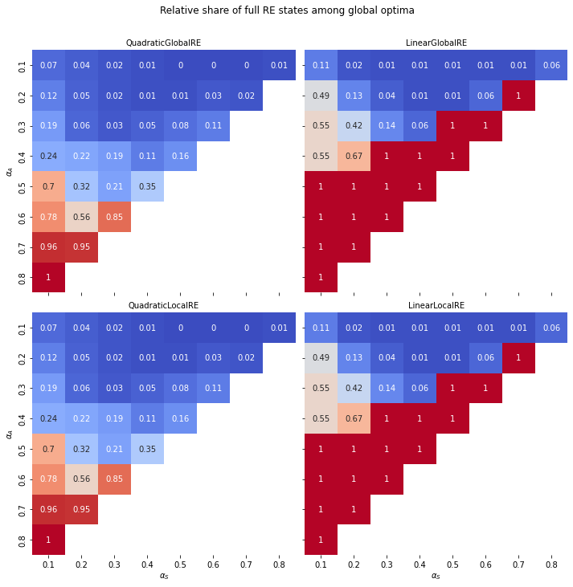

| Model | Number of full RE global optima | Number of global optima | Relative share of full RE global optima |
|---|---|---|---|
| QuadraticGlobalRE | 8167 | 64147 | 0.127 |
| LinearGlobalRE | 19430 | 59949 | 0.324 |
| QuadraticLocalRE | 8167 | 64147 | 0.127 |
| LinearLocalRE | 19430 | 59949 | 0.324 |
4 Full RE states
4.1 Background
A theory-commitment-pair \((C, T)\) is a full RE state iff
- it is a global optimum according to the achievement function, and
- the theory \(T\) fully and exlusively accounts for the commitments \(C\).
4.2 Method
Formally and irrespecitve of the model variant, full and exclusive account means \(C = \overline{T}\), or equivalenty, \(A(C, T) = 1\). During the generation of an ensemble, we can store for every global optima and for every fixed point resulting from a simulation setup, whether it satisfies conditions i) and ii) of full RE states, i) being trivially satisfied by global optima. For the relative shares we can consider ratio between the number of full RE states among global optima (fixed points) and the total number of global optima (fixed points) per configuration.
4.3 Results
4.3.1 Overall

Observations
- The relative share of full RE states among global optima is identical for
QuadraticGlobalREandQuadraticLocalRE, as well as forLinearGlobalREandLinearLocalREin Table 4.1 and Figure 4.1. This is to be expected because the local model variants rely on their global counterparts to determine global optima. - The relative share of full RE states among global optima is substantially higher for linear model variants.
| Model | Number of full RE fixed points | Number of fixed points | Relative share of full RE fixed points |
|---|---|---|---|
| QuadraticGlobalRE | 4201 | 41726 | 0.101 |
| LinearGlobalRE | 7418 | 32210 | 0.23 |
| QuadraticLocalRE | 3025 | 55659 | 0.054 |
| LinearLocalRE | 4538 | 22977 | 0.198 |

Observations
- The relative share of unique full RE fixed points (Figure 4.2) is lower than the corresponding results for global optima (Figure 4.1). This is not surprising as fixed points are reached through semi-globalLY or locally optimizing processes, which cover a restricted search space in contrast to global optimization.
| Model | Number of full RE fixed points | Number of fixed points | Relative share of full RE fixed points |
|---|---|---|---|
| QuadraticGlobalRE | 4699 | 48105 | 0.098 |
| LinearGlobalRE | 7418 | 32218 | 0.23 |
| QuadraticLocalRE | 12644 | 157034 | 0.081 |
| LinearLocalRE | 55638 | 112049 | 0.497 |

Observations
- The relative share of full RE fixed points from all branches (Figure 4.3) are similar to the corresponding results for unique fixed points (Figure 4.2), for
QuadraticGlobalRE,LinearGlobalRE, anQuadraticLocalRE, exceptingLinearLocalRE. - For
LinearLocalRE, the relative share of full RE fixed points is significantly higher when consdering the fixed points from all branches rather than unique fixed points. This means that a relatively higher share of branches lead to full RE fixed points than to non-full-RE fixed points. - The relative share of full RE fixed points for
LinearLocalRE(Figure 4.3), even exceeds the relative share of full RE global optima for linear model variants (Figure 4.1). - The number of fixed points from all branches (Table 4.3) is only slightly higher than the number of unique fixed points (Table 4.2) for
QuadraticGlobalREandLinearGlobalRE. In contrast, the number of fixed points from all branches is substantially higher than the number of unique fixed points forQuadraticLocalRE, and even more so forLinearLocalRE.
4.3.2 Heatmaps

Observations
- Linear model variants exhibit a “tipping line” (see XXX). For \(\alpha_{A} > \alpha_{F}\), the relative share of full RE global optima is 1, i.e., all global optima are full RE states.
- Quadrat model variants have a smooth transition between low and high relative shares, and they have a “hotspot” for very high values of \(\alpha_{A}\). This result is made plausible by the fact that full RE states require a maximal value for the measure of account, i.e, \(A(\mathcal{C}, \mathcal{T}) = 1\). High values for \(\alpha_{A}\) benefit the fulfillment of this requirement.


Observations
- Linear model variants do not exhibit the tipping line for fixed points (Figure 4.5 and Figure 4.6)
- Linear model variants have high relative shares for low faihtfulness, moderate account and high (but non-extreme) weights for systematicity.
- There are only small differences between relative share of full RE states among unique fixed points (Figure 4.5) and fixed points from all branches (Figure 4.6).
QuadratGlobalREexhibits its highest relative shares of full RE fixed points for moderately high values for \(\alpha_{A}\) and very low values for \(\alpha_{S}\).
4.4 Conclusion
Overall, the relative shares of full RE states among global optima and fixed points is not overwhelming, but heatmaps reveal combinations of weights for GlobalQuadraticRE, GlobalLinearRE and LinearLocalRE, where the relative share of full RE states among the outputs is acceptable. For QuadraticLocalRE, this holds at least for global optima. However, this does not constitute strong reasons to reject QuadraticLocalRE. Depending on the particular goals of an inquiry with RE, a low relative share of full RE states can be seen as a strength of a model, as it does not render everything into a full RE state.